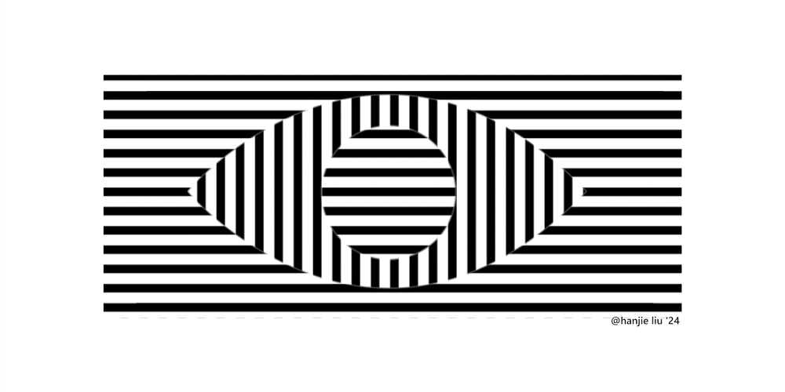

9.35 Illusion Laboratory
Spring 2023 Vision Lab

Angle & space effect on the McCollough effect
The McCollough effect is a well known effect in human perception of colorless gratings appearing colored after adaptation. What color the gratings appear is orientation-specific to the stimulus' orientation, and long lasting. The question this illusion seeks to answer is to what extent can the angle and space between gratings change while the effect is still strong before the illusion is broken.
The subject will let themselves adapt to a colored grating stimulus and confirm experiencing the McCollough effect on colorless gratings as control before moving onto varying grating angle and frequency independantly. After confirming the effect is present, they will be presented videos that test each angle & frequency variables individually for both the horizontal and veritcal stimulus. Each video starts at the control state, and throughout the 10 second clip the variable is increased. The subject is to pause the video at the point in which the illusion breaks. Please record the timestamp to later calculate the result.
MCCOLLOUGH EFFECT PT.1 - STIMULUS
Please give yourself 60 seconds to adapt to the stimulus. You should stare at both colored squares without break

MCCOLLOUGH EFFECT PT.2 - CONTROL
Please confirm you experience the McCollough effect (perception of color between the gratings) before moving on.

EXPERIMENT
The videos will start off with a 5 second refresher of the colored gratings to minimize any deterioration of the effect that may happen throughout the course of the illusion. You can confirm the presence of the effect with the control gratings (MCCOLLOUGH EFFECT PT.2) at any time.
While conducting the experiment, please remain the same relative distance away from the screen.
PT.1 - HORIZONTAL, ANGLE
Please note, if any, the timestamp at which the illusion breaks (color no longer percieved between gratings).
PT.2 - VERTICAL, ANGLE
Please note, if any, the timestamp at which the illusion breaks (color no longer percieved between gratings).
PT.3 - HORIZONTAL, SPACE
Please note, if any, the timestamp at which the illusion breaks (color no longer percieved between gratings).
PT.4 - VERTICAL, SPACE
Please note, if any, the timestamp at which the illusion breaks (color no longer percieved between gratings).
UNDERSTANDING YOUR RESULT
angle = (timestamp - 6)*2
space% = (timestamp - 6)*10
It is not necessary to calculate the result yourself, but please do include measured timestamps!
Just for fun: the McCollough Effect eye blinking illusion with motion ^__^.
also, i just noticed something crazy, when i scroll the horizontal bars flash redder to me (pls confirm im not crazy)